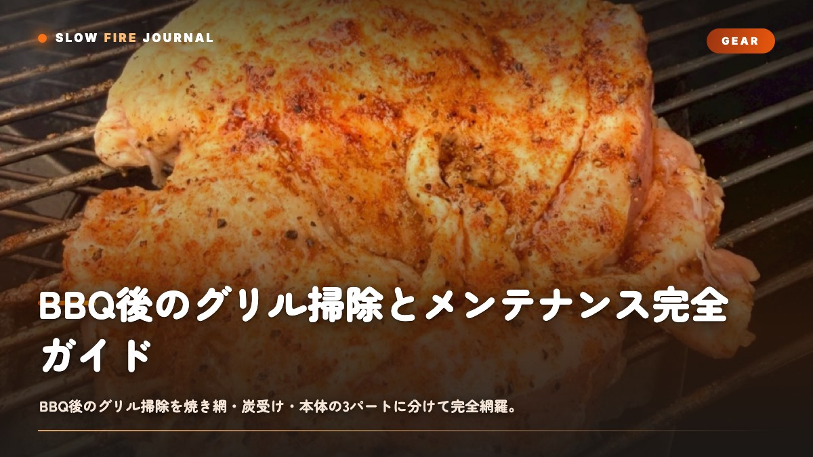

BBQ後のグリル掃除とメンテナンス完全ガイド — 焼き網・炭受け・本体を長持ちさせる手順
BBQが終わったあとのグリル掃除、つい後回しにして「あとでやろう」が「やらない」になっていませんか？実は、グリルが消耗品になるか一生モノになるかって、焼き終わった直後の10分で決まってしまうんですよね。コツは「150〜200℃の余熱でカーボンを浮かせて、冷める前に8割落とす」こと。冷え切ってカチカチに固まった脂と戦うのが、いちばん非効率な掃除なんです。だったら熱いうちにサッと——それだけで、ぐっとラクになりますよ。

結論から言うと、掃除は「焼き終わり直後の余熱」で8割が終わります
グリル掃除を面倒に感じてしまう方って、じつはほとんどが同じところでつまずいているんですよね。完全に冷めて、脂とカーボンがプラスチックみたいにカチカチに固まってから取りかかってしまうんです。そうなると、こすっても薬剤を使っても、なかなか剥がれてくれません。
正しい順番はこうです。肉を全部下ろした直後、グリル内部がまだ150〜200℃ある状態で蓋を閉めて、焼き網を5〜10分「空焼き」してあげる。すると網に残った脂やタンパク質が炭化して脆くなって、ブラシで触れるだけでボロッと落ちてくれます。このひと手間だけで、掃除全体の労力が体感で半分以下になるんです。
掃除する場所は大きく3つに分けられます。焼き網(毎回)・炭受け/灰受け(毎回〜数回に一度)・本体内側と外装(数回に一度)。これを全部ごっちゃにして毎回フルメンテしようとすると、たいてい挫折してしまいます。頻度を分けてあげる——これが続けるいちばんのコツかなと思います。
なぜ「熱いうちに」がいいの？ — 油脂とカーボンの科学
焼き網にこびりつくものって、主に2種類なんです。動物性脂肪が酸化重合した「脂膜」と、タンパク質や糖が炭化した「カーボン」ですね。脂膜は60〜70℃を超えると軟化して粘度が下がるので、ブラシで掻き取りやすくなります。逆に常温まで下がると硬化して、樹脂のように網へぴったり密着してしまうんですよね。
カーボンのほうは、200℃前後の余熱でさらに加熱されると、含んでいた水分が抜けて多孔質で脆い構造になります。指で潰せば粉になるくらいの状態ですね。だから「肉を下ろす→蓋を閉めて空焼き5〜10分→まだ温かいうちにブラッシング」という流れが、化学的にもちゃんと理にかなっているんです。
もう一点だけ。鋳鉄や鉄の焼き網は、水で濡らしたまま放置すると数時間でサビが出てきてしまいます。熱が残るうちに掃除を終えれば、余熱で水分が飛んで、サビの起点を作らずに済むんですよね。冷めてから水洗いするのは、鉄製網にとっていちばん避けたい選択です。ここだけは覚えておいてください。
焼き網の掃除 — 毎回やる3ステップ
ステップ1:余熱で空焼き(5〜10分)
肉を下ろしたら蓋を閉じて、炭火なら残り火、ガスなら強火で網だけを5〜10分加熱してあげてください。表面温度の目安は200〜250℃くらいですね。煙が出なくなったら、脂が炭化したサインです。
ステップ2:熱いうちにブラッシング
耐熱グローブを着けて、網がまだ150℃以上あるうちに、金属ブラシかスクレーパーで一方向にこすります。往復ではなく一定方向に動かしてあげると、焦げカスが網目の片側に集まって落としやすいんですよね。1枚あたり1〜2分もあれば済みますよ。
金属ブラシの抜け毛が肉に混ざってしまう事故が心配なら、ステンレスのコイル型スクレーパーか、丸めたアルミホイルをトングで掴んでこする方法が安全です。ブラシは3〜4か月、もしくは毛先が乱れてきたら交換してあげてください。
ステップ3:油膜を戻す(鉄・鋳鉄のみ)
ステンレス網には要りませんが、鉄・鋳鉄の網は掃除のあとに薄く油を塗っておきます。キッチンペーパーに高発煙点のオイル(キャノーラ・グレープシード・米油など、発煙点200℃以上)を含ませて、まだ温かい網に薄く伸ばしてあげてください。ベタつくほど塗ると逆に酸化重合して固まってしまうので、「テカリが残る程度」で止めるのがコツです。これが次回のこびりつき防止と防錆を兼ねてくれます。
| 網の素材 | 掃除後の油膜 | 水洗い | サビやすさ |
|---|---|---|---|
| ステンレス | 不要 | 可 | 低い |
| 鉄(クロムめっき) | 推奨 | 避ける | 中 |
| 鋳鉄 | 必須 | 禁止に近い | 高い |
炭受け・灰受け・本体内側の掃除
灰の処理(毎回〜2回に一度)
灰は、完全に冷めてから捨ててあげてください。火種って見た目には消えていても、内部で48時間くすぶっていることがあるんです。なので金属バケツに移して、最低24時間は置いておくのが鉄則ですね。可燃物の上やビニール袋に直接入れて火災になる事故が、毎年起きています。これだけは本当に気をつけてください。冷めた灰は不燃ごみ扱いが基本ですが、念のため自治体のルールも確認してもらえると安心です。
灰を残したまま次に火を起こすと、吸気口が詰まって火力が安定しなくなってしまいます。炭グリルなら2回に1度は底をブラシで掃いて、灰受けトレイを空にしてあげるといいですよ。
本体内側のタール除去(3〜5回に一度)
蓋の裏に黒くベタつく層がついてきますが、これは煤と脂が混ざった「シーズニング層」なので、無理に剥がさなくて大丈夫です。問題になるのは、厚く垂れてフレーク状に剥がれ落ちるようになってきたときですね。これが肉に落ちると、苦味の原因になってしまいます。プラスチックのスクレーパーで浮いた部分だけ削って、薄い層は残してあげてください。蓋裏を金ブラシでピカピカにする必要はないんですよね。
油受け・ドリップトレイ(毎回)
溜まった脂は、固まる前に拭き取ってしまいましょう。アルミの使い捨てライナーを敷いておけば、交換するだけで済むので、掃除の手間がほぼゼロになります。脂を溜めすぎるとグリスファイア(脂火災)の原因になるので、ここは毎回確認してあげてくださいね。
外装と長期メンテナンス
外装(月1回程度)
ステンレス外装は、中性洗剤を含ませた布で「ヘアライン(目)に沿って」拭いてあげてください。目に逆らって拭くと、細かい傷が目立ってしまうんですよね。乾いたあとに専用のステンレスポリッシュかベビーオイルを薄く塗っておくと、指紋がつきにくくなります。塗装スチール製は研磨剤入りクレンザーがNGで、塗膜が剥げてサビてしまうので気をつけてください。
サビが出てしまったら
表面の点サビくらいなら、真鍮ブラシか#400程度の耐水ペーパーで擦り落として、油を塗ってあげれば大丈夫です。穴が開くほど進んでしまった炭受けは、交換してしまうのが現実的かなと思います。鋳鉄網のサビは、金ブラシで落としたあとオイルを塗って、250℃で30〜40分空焼きする「再シーズニング」で復活してくれますよ。これを1〜2回繰り返すと、黒い保護膜がちゃんと再生します。
オフシーズンの保管
長期保管の前には、焼き網・炭受けまで分解して清掃して、鉄の部分には油膜を残しておいてください。湿気が最大の敵なので、屋外なら通気性のあるカバーを使って、密閉ビニールで包むのは避けたほうがいいです(結露でサビてしまいます)。室内や物置に入れられるなら、それがいちばん安心ですね。ガスグリルはホースの劣化を年1回点検して、レギュレーター接続部に石鹸水を塗って、気泡が出ないか漏れチェックしてあげてください。
よくやってしまう失敗と、その避け方
- 冷めてから水で丸洗い → 固着した脂は落ちませんし、鉄網はすぐサビてしまいます。熱いうちのブラッシングに切り替えてあげてください。
- 金ブラシの毛が肉に混入 → コイル型スクレーパーかアルミホイル玉に替えると安心です。ブラシは定期的に交換してあげましょう。
- 蓋裏を毎回ピカピカに削る → 保護層まで剥がしてしまって、本体がかえってサビやすくなります。浮いたフレークだけ除去すれば十分です。
- 油の塗りすぎ → ベタつきが酸化して固着してしまいます。薄くテカる程度で止めておいてください。
- 熱い灰を袋へ → 火災リスクがあります。金属容器で24時間以上しっかり冷ましてください。
- 洗剤を網に使って洗い流さない → 次に加熱したときに洗剤残りが煙ってしまいます。網に洗剤は基本使わず、熱と物理で落とすのがおすすめです。
うまくいかないときの早見表
| 症状 | 原因 | 対処 |
|---|---|---|
| 肉が網にこびりつく | 油膜不足・予熱不足 | 網を250℃まで予熱し油を薄塗り |
| 煙が異常に苦い | 蓋裏タールの剥落 | 浮いた層をスクレーパーで除去 |
| 火力が安定しない(炭) | 灰詰まりで吸気不良 | 底と灰受けを毎回清掃 |
| 網に赤サビ | 水洗い後の放置 | 真鍮ブラシ+油+250℃空焼きで再生 |
| 調理中に炎が上がる | ドリップトレイの脂過多 | ライナー交換・脂をこまめに除去 |
頻度のまとめ — 続けられる現実的なサイクル
| 作業 | 頻度 | 所要 |
|---|---|---|
| 網の空焼き+ブラッシング | 毎回 | 5〜10分 |
| 鉄網の油膜 | 毎回(鉄のみ) | 1分 |
| 灰・ドリップトレイ処理 | 毎回〜2回に1度 | 3分 |
| 本体内側・蓋裏点検 | 3〜5回に1度 | 10分 |
| 外装拭き・ガス漏れ点検 | 月1回 | 10分 |
| 分解清掃・再シーズニング | シーズン終了時 | 40〜60分 |
ラブをたっぷり使うアメリカンBBQでは、砂糖を含む焦げが網に残りやすいんですよね。Low n Slow Basicsのような糖を含むラブを使った日は、空焼きの時間を10分側に寄せてあげると、糖のカラメル化残渣がしっかり炭化して落ちてくれます。掃除を前提に道具を選んで、頻度を分けて回していく。地味なんですけど、これがグリルを10年使うためのいちばん確実な近道かなと思います。ぜひ今日から、焼き終わりの10分を味方にしてみてください。
よくある質問
焼き網は洗剤で洗ってもいいですか?
基本は不要です。網は熱と物理(空焼き+ブラッシング)で落とすのが王道で、洗剤を使うと残留分が次回加熱時に煙ったり風味に移ったりします。どうしても洗剤を使うなら、その後しっかりすすぎ、250℃で空焼きして完全に飛ばし、鉄網は油膜を戻してください。
灰はいつ捨てれば安全ですか?
見た目に火種が消えていても内部で長時間くすぶるため、金属製のフタ付きバケツに移して最低24時間は冷ましてから処分します。可燃ごみ袋や紙袋に直接入れるのは火災の原因になります。捨て方は自治体ルールを確認してください。
しばらく使わない間にサビが出ました。捨てるしかない?
穴が開いていなければ再生できます。真鍮ブラシや#400耐水ペーパーで赤サビを落とし、高発煙点の油を薄く塗って250℃で30〜40分空焼きしてください。1〜2回繰り返すと黒い保護膜(シーズニング)が再生し、再び使えるようになります。穴あきの炭受けは交換が現実的です。